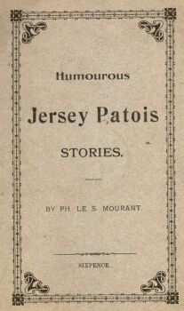

Né v'chin eunne brachie d'histouèthes en Jerriais, pour faithe rithe les gens tristes et touôs les siens qu'ont l's'ésprits bas. Y'a du fonne partout! Chu pouôre Chantnyi Bilo fut niét ès bënnis, coumme nou sait: ch'est ichin tchiq'eunnes dé ses histouéthes rassembliées par y'un d'ses n'veurs. Y'en a pour touâs les gouts. Et d'rithe! D'vant qué dé qu'menchi a liéthe, autant vaut les garçons dèsboutounné lus vestes et les fillés dèslachi lus baleinnes dé cor'.
L'prix du livre èst trop bouân marchi: quand j'pense qué pour le même prix nou-peu accaté eunne démié livre de beurre ou offuche un couplye dé maquéthieaux, j'n'en r'avins pon. Car, d'éscrithe en Jerriais, ch'est pas si aisi qué d'rempiêté des cauches! Quand je qu'menchi mé môme a m'y'èsprouvé, y'm falli ôté casaque et veste, amathé ma gambe au pid d'tabye, et nou poué entendre la sueu qui tchiyait, toc, toc, toc, sus l'aithe. Et j'ûsi eunne plieumme toutes les chinq minutes. Achteu, ch'n'est pon tout a fait si èscrâsant: j'peux èscrithe quasi eunne heuthe dé temps sans affolé, et quand tchiq'un mèstrueûlle eunne bollée d'ieau dans l'co, j'peut fillé pour eunne autre heuthe.
Et tout man travas, et l'sien d'man défunt onclye Bram Bilo, pour (douze sous) ch'est vraiment trop bouan marchi.
Bram Bilo
1890
Viyiz étout: